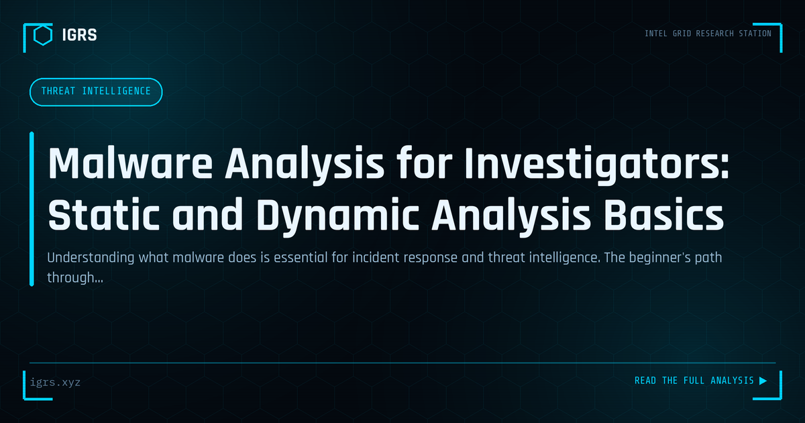

Malware Analysis for Investigators: Static and Dynamic Analysis Basics
| File No. | IGRS-043/2026 |
| Subject | Introduction to malware analysis techniques for SOC analysts and forensic investigators |
| Category | Threat Intelligence |
| Author | Manuj Kumar Pandey |
| Published | 2026-04-15 |
| Reading time | 12 minutes |
Understanding what malware does is essential for incident response and threat intelligence. The beginner's path through static and dynamic analysis.
Malware Analysis: Understanding the Threat
Malware analysis is the process of dissecting malicious software to understand its behaviour, capabilities, and purpose. For incident responders and threat analysts, it answers critical questions: what does this malware do, how does it spread, what data does it target, and how can it be detected and removed? This guide introduces malware analysis fundamentals and methodology for security professionals.
The Two Main Approaches
| Approach | Method | Reveals |
|---|---|---|
| Static analysis | Examine without executing | Code structure, strings, indicators |
| Dynamic analysis | Execute in a sandbox | Actual behaviour, network activity |
Most thorough analysis combines both — static analysis to understand structure safely, then dynamic analysis to observe real behaviour. Each reveals different aspects of the malware.
Setting Up a Safe Analysis Environment
Malware analysis must occur in an isolated environment to prevent infection of production systems. This means a dedicated virtual machine with no network connection to real systems, snapshots to revert after each analysis, and host isolation. Many analysts use purpose-built environments like REMnux (Linux) and FLARE VM (Windows). Never analyse live malware on a primary work machine — the risk is too great.
Static Analysis Techniques
Static analysis examines malware without running it:
- Hashing — compute SHA-256 for identification and reputation lookup
- Strings extraction — readable text revealing URLs, commands, indicators
- PE analysis — examine the executable structure, imports, sections
- Disassembly — analyse the code with IDA Pro or Ghidra
- YARA rules — match against known malware patterns
Dynamic Analysis Techniques
Dynamic analysis runs the malware in a controlled sandbox and observes its behaviour: what files it creates or modifies, what registry changes it makes, what network connections it attempts, what processes it spawns, and what persistence mechanisms it establishes. This reveals the malware's actual operation, including behaviour that static analysis alone might miss, such as decrypted payloads and runtime decisions.
Essential Malware Analysis Tools
| Tool | Purpose |
|---|---|
| Ghidra / IDA Pro | Disassembly and reverse engineering |
| x64dbg | Debugging |
| PEStudio | PE file analysis |
| Wireshark | Network behaviour capture |
| Any.Run / Cuckoo | Automated sandbox analysis |
| VirusTotal | Reputation and multi-engine scan |
Automated Sandbox Analysis
Automated sandboxes like Any.Run, Cuckoo, and Joe Sandbox execute malware and produce detailed behaviour reports automatically. They are invaluable for rapid triage, generating indicators, network activity, and behavioural summaries quickly. While automated analysis does not replace skilled manual reverse engineering for sophisticated threats, it provides fast, actionable insight for most samples and a starting point for deeper analysis.
Extracting Indicators of Compromise
A primary goal of malware analysis is extracting Indicators of Compromise (IOCs) — the file hashes, C2 domains and IPs, registry keys, file paths, and behavioural patterns that enable detection. These IOCs feed into security tools to detect and block the malware across the environment, and into threat intelligence to protect others. Converting analysis into actionable IOCs is what makes the effort operationally valuable.
Evasion and Anti-Analysis Techniques
Sophisticated malware employs anti-analysis techniques: detecting virtual machines and sandboxes to alter behaviour, obfuscating and packing code to hinder static analysis, encrypting payloads, and delaying execution to evade automated sandboxes. Recognising and overcoming these techniques is part of advanced malware analysis, requiring analysts to harden their environments and apply manual techniques when automation is defeated.
Malware Analysis in Incident Response
During incident response, malware analysis answers urgent questions: what is the scope of the compromise, what data is at risk, how does the malware spread, and how can it be eradicated. Even rapid triage analysis — identifying the strain, its capabilities, and its IOCs — directly informs containment and recovery. The analysis bridges understanding the threat and acting against it.
Legal and Safety Considerations
Malware analysis must be conducted responsibly. Handling live malware requires strict containment to prevent accidental spread. For evidence purposes, samples must be preserved with proper hashing and chain of custody. In India, analysis supporting investigation should be documented for potential court use with Section 63 BSA certification. Analysts must also avoid inadvertently contacting live C2 infrastructure in ways that could alert attackers or cause harm.
Building Malware Analysis Skills
Malware analysis is a deep, rewarding discipline built through practice on safe samples, learning reverse engineering with tools like Ghidra, understanding operating system internals, and studying how malware operates. For Indian security professionals, malware analysis capability strengthens incident response and threat intelligence. Starting with automated sandboxes and static analysis, then progressing to manual reverse engineering, builds the expertise to understand and counter the malware threats that organisations increasingly face.